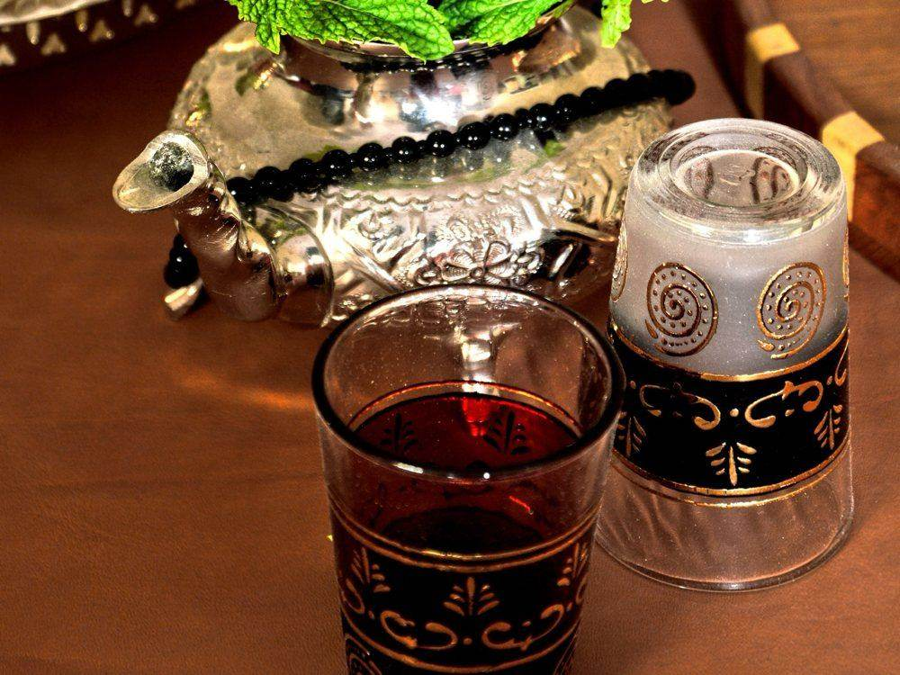
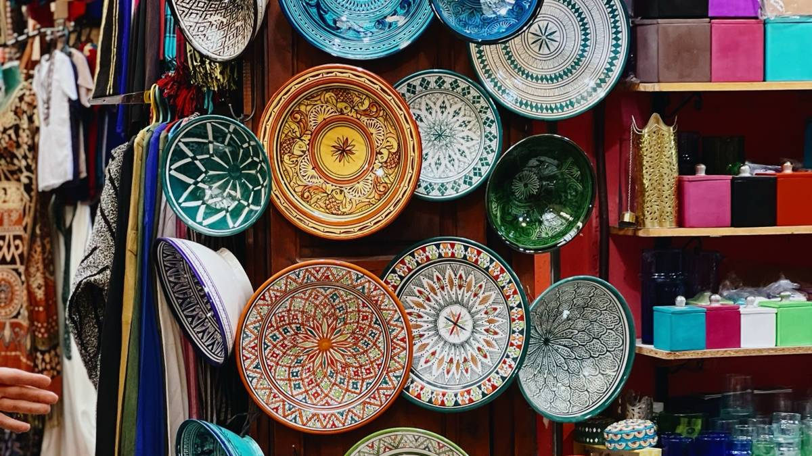

Your first trip to Morocco is an explosion of colours, sounds, flavours and new habits. The country is welcoming and easy to travel, but a few things work differently from home: money, taxis, bargaining, dress, photos, the rhythm of the medinas. Knowing them in advance makes the difference between a stressful trip and a wonderful one.
Here are the 25 tips we give every guest before they arrive, from our team of local drivers and guides, followed by the most common mistakes first-time visitors make.
Money and budget
- The dirham is a closed currency. You cannot buy Moroccan dirhams (MAD) before you leave. Change money at the airport, a bank or an exchange office, or withdraw from an ATM on arrival. Keep your exchange receipts if you want to change dirhams back when you leave.
- Cash is king. Hotels, riads and bigger restaurants take cards, but souks, taxis, small cafés and tips are paid in cash. Always carry some small notes and coins.
- ATMs are everywhere in the cities, but rare in the mountains and the desert. Withdraw before you leave Marrakech or Fes.
- Tipping is part of life: about 10% in restaurants, a few dirhams for small services, and more for guides and drivers at the end of a tour. Read our guide to bargaining and tipping.
- Plan your budget with our article on how much a trip to Morocco costs.
Getting around
- Petit taxis (small taxis inside the cities) must use the meter: ask for the compteur before you start. If the driver refuses, agree on the price first or take another taxi.
- Trains are good between the big cities. The high-speed Al Boraq links Tangier to Rabat and Casablanca in about two hours.
- Distances are long and roads are slow in the mountains. Marrakech to Merzouga is about 9 to 10 hours of driving, so a desert trip from Marrakech needs at least 3 days. Read how many days you need in Morocco.
- Driving yourself is possible but tiring: busy medina streets, police checks, animals on the road and mountain passes. A private driver lets you enjoy the trip.
- Don’t over-plan. One or two big sights a day is enough. The best moments often happen in between: a tea with a family, a stop at a viewpoint.
Culture and respect
- Dress modestly: cover shoulders and knees in the medinas and villages, for both men and women. On the beach and in hotels it is more relaxed. See what to wear in Morocco.
- Always ask before photographing people. Many Moroccans, especially women and older people, do not want to be photographed. Some performers in the squares ask for a few dirhams.
- Learn a few words: salam alaikum (hello), shukran (thank you), la, shukran (no, thank you), bslama (goodbye). French is widely spoken, and English and Spanish in tourist areas.
- Mosques are closed to non-Muslims, except the Hassan II Mosque in Casablanca and a few historic sites such as the madrasas of Fes and Marrakech.
- Friday is the holy day: some shops close at midday for the main prayer. During Ramadan, eat and drink discreetly in public: read travelling during Ramadan.
- Accept the tea. Mint tea is a sign of welcome. Refusing it is not rude, but accepting it is the start of many good conversations.

In the medina and the souks
- Bargaining is normal in the souks, but not in supermarkets, restaurants or shops with fixed prices. Smile, take your time and only make an offer if you really want the item.
- Ignore “faux guides”. If someone tells you that a street is closed, that the tannery is “this way” or that there is a festival today, politely say no thank you and keep walking.
- GPS is not always right in the covered lanes. Save your riad on an offline map and ask a shopkeeper rather than a person who follows you.
- Watch out for henna and snake charmers on Jemaa el-Fnaa: don’t let anyone start a henna tattoo or put a snake on your shoulders unless you have agreed on a price.
- Keep your valuables close in busy places, as in any big city. Morocco is a safe country; read is it safe to travel to Morocco.

Practical details
- Buy a local SIM card (Maroc Telecom, Orange or inwi) at the airport for a few euros. Mobile internet works well, even in much of the desert.
- Drink bottled water and avoid ice from unknown places. Fruits and vegetables cooked or peeled are fine.
- Plugs are type C and E (European, 220 V). Bring an adapter if you come from the UK or the US.
- Don’t bring a drone without official permission: drones are usually held at customs. Also check that your passport is valid for your whole stay: see visa and entry requirements.
The most common mistakes of first-time visitors
| Mistake | What to do instead |
|---|---|
| Trying to see the whole country in one week | Choose one region, or Marrakech plus the desert |
| A one-day trip to the Sahara from Marrakech | Plan at least 3 days for Merzouga |
| Packing only summer clothes | Bring a warm layer: desert and mountain nights are cold most of the year |
| Following a stranger who offers help in the medina | Ask a shopkeeper, or book a licensed guide |
| Taking a taxi without the meter or an agreed price | Ask for the meter, or agree on the price before you get in |
| Arriving without any cash | Withdraw dirhams at the airport |
Is a private tour a good idea for a first trip?
For a first visit, a private tour removes most of the stress: your driver picks you up, knows the roads and the timing, chooses good places to eat and explains the culture along the way. You keep your freedom, with a route made for you. Compare the options in private tour or group tour, see our itineraries for 7 days and 10 days, or ask us for a custom tour.
Frequently asked questions
Is Morocco easy for first-time travellers?
Yes. It is close to Europe, welcoming and well organised for tourism. The main challenges are the busy medinas and the bargaining, and they become fun once you know the tips above.
How much cash should I carry?
Carry enough for the day: taxis, snacks, small purchases and tips. In cities you can withdraw easily; before the desert or the mountains, withdraw enough for several days.
Can women travel in Morocco?
Yes, many women travel in Morocco, alone or in groups. Dress modestly, ignore unwanted comments and choose well-rated riads. With a private driver-guide the trip is very easy.
What language is spoken in Morocco?
The official languages are Arabic and Amazigh (Berber). Moroccans speak Darija, a Moroccan Arabic. French is widely used, and English and Spanish are common in tourist areas.
What is the best first trip to Morocco?
Marrakech plus 3 or 4 days through the Atlas, the gorges and the Sahara is the classic first trip. With 7 to 10 days you can add Fes or the coast.
Keep reading: Is it safe to travel to Morocco? · What to wear in Morocco · How much does a trip to Morocco cost?